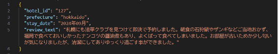
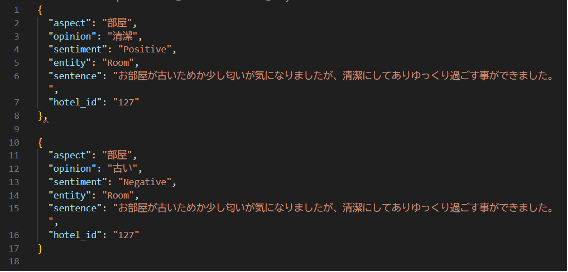
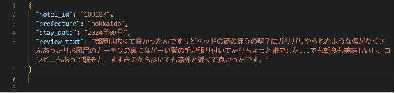
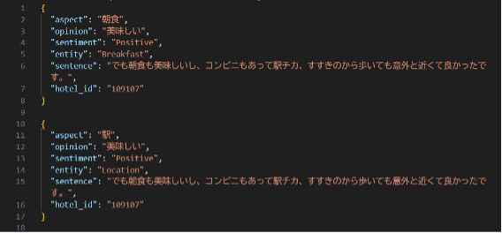
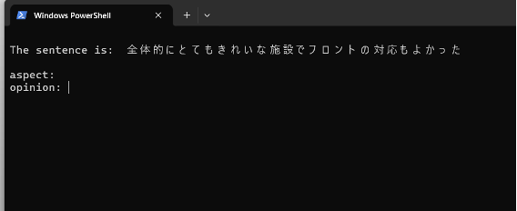
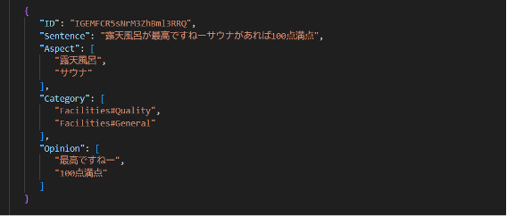
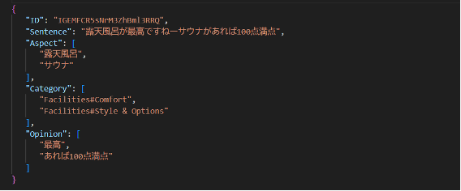

我們隨後進行了對爬蟲取得的資料進行前處理的作業。資料前處理是指，對已完成爬蟲的評論資料加上面向（Aspect）、評價詞（Opinion）、情感極性等標註，使其成為可供實際分析的狀態。此外，由於分析時需將評論按句分割，我們使用 Python 進行了句子抽取與屬性標註的處理。處理結果如下所示。
・原始資料
・前處理後的資料
如上所述，我們成功地從評論文本中擷取出單句，並加上了 aspect（面向）、opinion（評價詞）、sentiment（情感極性）、entity（實體）、sentence（句子）、hotel_id（飯店編號）等資訊，雖然已能準確標註各個 opinion，然而指導教授對此仍表示保留。 其原因如下所示。
・原始資料
・處理後的資料
如上所示，「車站（location）」這個面向被誤標註為「美味」這樣的評價詞（opinion）。 這是因為該標註程式依賴於單詞的共現關係，當一個句子中出現多個情感表達時，經常會發生錯誤分類的情況。
在本次的標註作業中，我們尚未明確指定要分析的 Entity（評價對象），也尚未設定 Attribute（評價觀點）。
因此，指導教授指示我們必須明確劃分資料中的 Entity 與 Attribute，並要求我們對於情感極性（Sentiment）部分進行手動標註。
此外，教授也提供了先行研究中所使用的 Python 程式碼（可對評論句進行手動 ABSA 標註的工具），溝上同學則參考該程式，重新撰寫了符合我們研究需求的 Python 程式碼。
基於上述背景，我們決定以以下方式推進研究：
・關於 Entity 與 Attribute 的定義，我們依照教授指定的參考論文內容，直接採用其中所列的分類方式，內容如下所示。
・我們調整了教授提供的程式碼，並使用該工具手動進行 ABSA 標註作業。在此過程中，兩人一組分別對各自的50筆資料進行標註，之後再相互確認對 Opinion、Entity 等的選擇是否一致。 透過這樣的方式，可以提升用於機器學習的資料品質，進而增強模型的效能。 目前，我們正依照此方針推進研究。此外，標註結果的相符率需達到至少70%。
透過此工具，可將資料中的評論逐句擷取，並進行人工標註。
・工具輸入畫面
接著由兩名成員實際進行標註作業，並獲得了如下結果：
標註結果 A
標註結果 B
如上所示，兩人之間在標註結果上出現了差異。根據這些結果，暴露出以下幾點問題：
因此，我們新增了如下標註規則：
在依據新規則進行第二次標註後，結果如下：
上述數據顯示，標註準則的統一有助於整體一致性的提升。